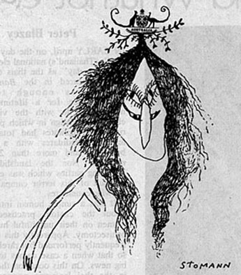

|
REALITIES
GALLERY Thrilled when I arrived outside Realities to note that one of the poor people of Toorak had parked their Rolls-Royce smackbang in front of the main door. It gave me a warm feeling to see Marianne's sister-in-law Kate "AM" Baillieu arriving in a terribly trendy Renault 12 with two male companions - one of whom appeared to be about ten. Kate looked the utter mother as she adjusted junior's socks. Inside the gallery Roger Kemp's works were stunning. Marianne B looked the true scandinavian beauty that she is in her lilac gown with the scooped neckline. Though it was rather coarse of one of her guests to say, sotto voce, that she has the deepest cleavage west of Orrong road, Toorak. Magnificently masculine Matcham Skipper was one of the most comfortably dressed men present with his moss green suede jacket, black trousers, Eltham mudcaked boots and pendant. That man looks so strong . . . Advertising tycoon Peter Clemenger in his grey (not flannel) suit and blue tie made the perfect contrast to Matcham. Samantha's show stopper award has to go to the delicate young male wearing blue jeans topped with a lime green jacket with a tres chic Granny Davis bread emblem on the top pocket. A Pluto badge pinned to the jacket highlighted this magnificent ensemble. His hair was done Sassoon style. Caroline Parker looked her usual radiant self. Melbourne's lord mayor Ronnie Walker looked apprehensively around the gallery just to make certain sir John Kerr wasnt in attendance. Ronnie's wife Barbara was wearing a thoroughly practical and understated little black dress. She didnt look at all like one of those discreet shop assistants at Georges. When Marianne Baillieu asked the 300 mainly rich invited guests to be quiet for a few minutes after she said a delightfully short few words to open the gallery, they showed what perfect pigs many Toorak types can be. Most of them stayed quiet for less than one minute and then it was absolutely impossible to hear the fine music the quartet were playing. Such extraordinary bad manners from people who should know better. One of the few people trying to listen to the quartet was a beautiful lass with an interesting Maria Schneider face and a Last tango in Paris hairstyle to match. Her ethnic-look Bails brown sweater contrasted with her pink and white skirt and her high black boots. The light brown beads added just the right accent. She had a v generous mouth. Trendy graffiti photographer Rennie "Fuck" Ellis was managing to look suitably stoned when you could get a |
 glimpse of his expression behind his funny, droopy Fu Manchu moustache. Rennie was clad in the trendies uniform of blue jeans which were topped by a scruffy looking green jacket. Rennie's wife Caroline was wearing a pained expression. My dear old friend Claudia "The toughest man in the radio" Wright was surrounded by her court jesters and attendants right in the middle of the main gallery. Georges Mora was wearing a v amazing brown, geometric butterfly bowtie. Lorraine Dickens, the director of opposition gallery Bartonis, was really resplendent in an orange jumpsuit that did amazing things for her complexion. Lorraine's solicitor husband Michael wore a conservative two piece suit. Experienced photographer of nude Nedlands ballet dancers, Paul Cox, was giving a convincing impersonation of Antonioni with a movie camera and harsh, intrusive floodlamps. PC was accompanied by a lovely young thing wearing a caramel suede frock laced lovingly at the bodice and with the most unusual snakeskin trim. Not sure what type of snake it was, but I dont think it was a trouser snake. Saw David Bardas, the head of the Sportsgirl group, in a plain blue suit which didnt seem to belong to the funfashion image he's built so well for Sportsgirl. David looks as if he has lost weight. Also seen were playwright David Williamson, Laurence Beck, cow killing artist Ivan Durrant, mountaineer Michael Morris and film critic Andrew McKay. SAMANTHA'S FABULOUS FIVE.
|